| 日付 | 2026年5月3日（日） - 2026年5月6日（水） |
|---|---|
| 山域 | 飛騨の山 |
| メンバー | 家族（妻） |
| 山行形態 | 3泊4日キャンプ |
| アクセス | 車 |
| ルート (Map) | ● |
2日目
昨夜は予報通り大雨だった。夜中にタープが倒れて、椅子などが水浸しになってしまった。
もともと地面が柔らかく、さらに雨が降ったので、タープを支えることができなかったようだ。
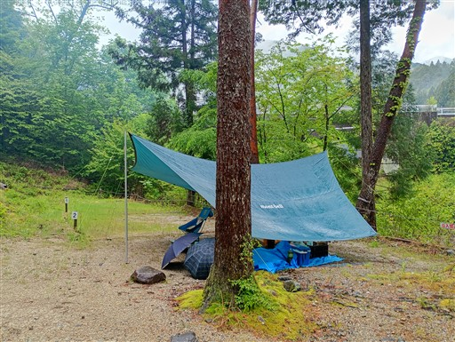
吊り橋から見た川。昨日とは水量が全く違う。
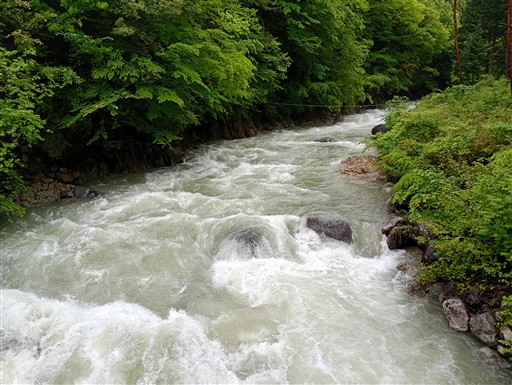
キャンプ場を少し散策する。本日は悪天なので山には行かない予定。
観光のみなので朝はゆっくり。
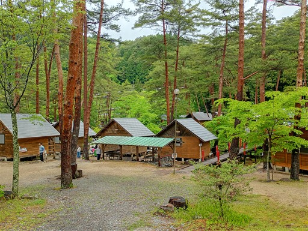
魚釣りができるようだ。
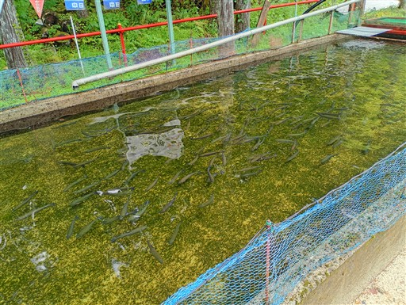
川の合流地点。ここも激流だ。
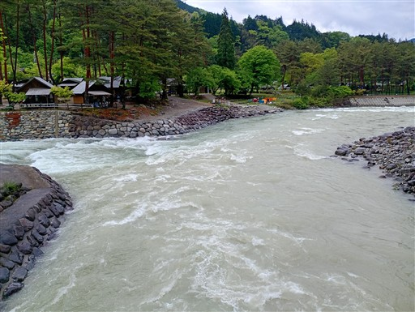
本日は、まずはキャンプ場側の付知峡に行ってみる。
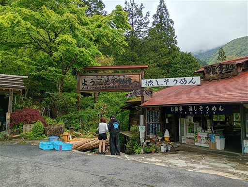
遊歩道は整備されている。
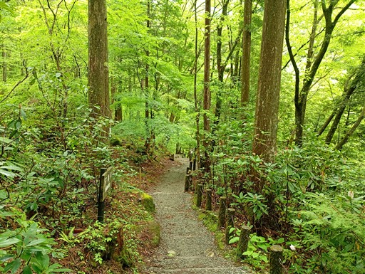
僅かに咲き残ったシャクナゲ。
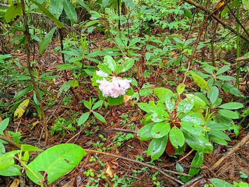
観音滝。ゴルジュ帯に流れ落ちる美しい滝だ。
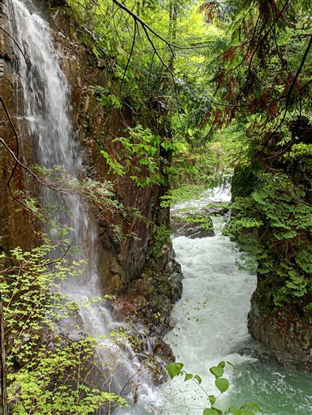
そのすぐ下流が不動滝。すさまじい轟音。
昨日の雨で水量が増えていて迫力はあるが、美しさは少し損なわれている。
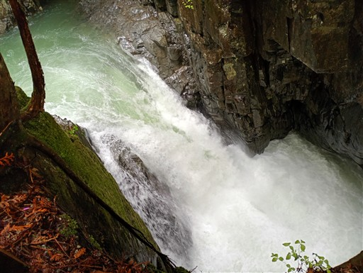
この川、観音滝に続いているはず。
周囲は谷地形でもなく、観音滝は人口の滝なのか？
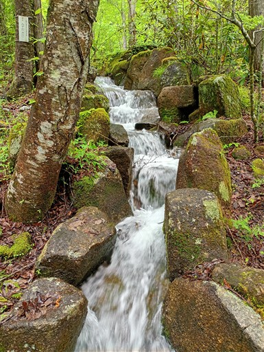
何人以上なんだろう？
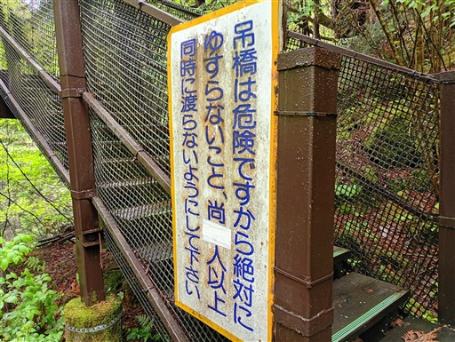
立派な吊り橋。
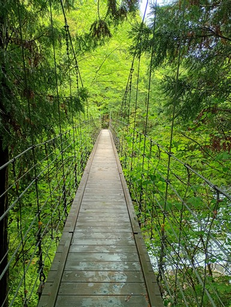
橋から眺める渓谷。
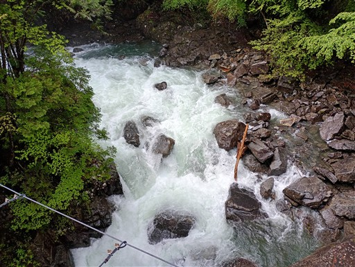
川岸に下りてくる。
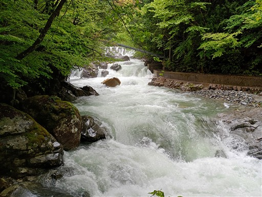
仙樽の滝はこれかな？
水量が多すぎて何が何やらよく分からない。
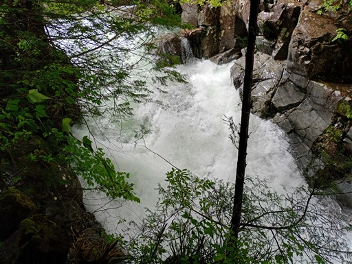
凄まじい水しぶき。滝をきれいに見渡せるポイントは無い。
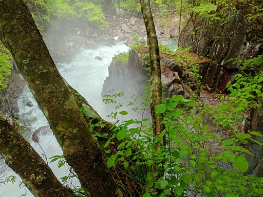
あとは遊歩道を歩いて駐車場に戻る。隣に水路がある。
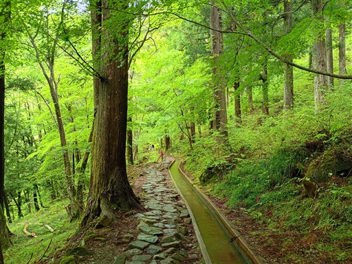
ここが観音滝への取水口？
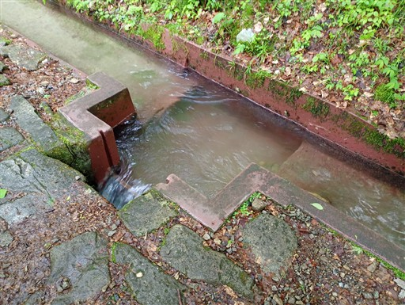
付知峡観光を終えたら、続いて馬籠宿に行く。
広大な駐車場に車を停める。
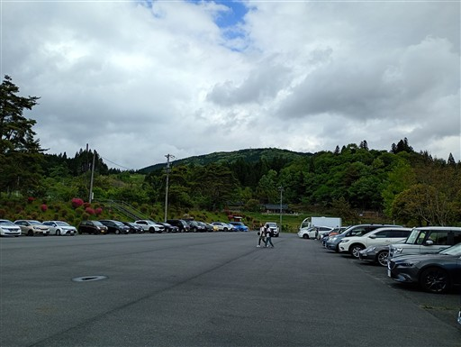
まずは「まごめや」で腹ごしらえ。
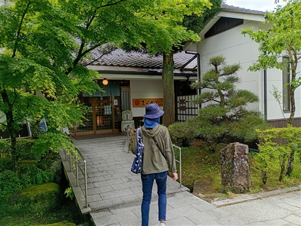
かなり賑わっている。坂道が続いていて、その坂道に沿って店が並んでいる。
お隣の妻籠宿は建物がよく保存されているのに対して、馬籠宿は再建されたもの。
今風の店が多く、若者に人気があるのはこちららしい。
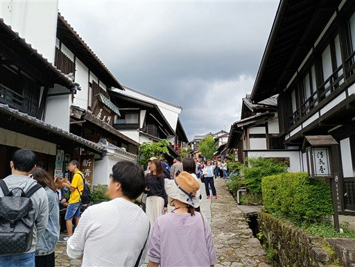
水車をあちらこちらで見かける。
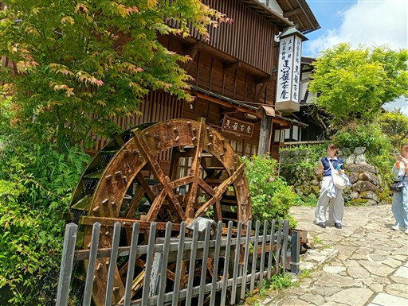
藤村記念館。島崎藤村はこの地の出身らしい。
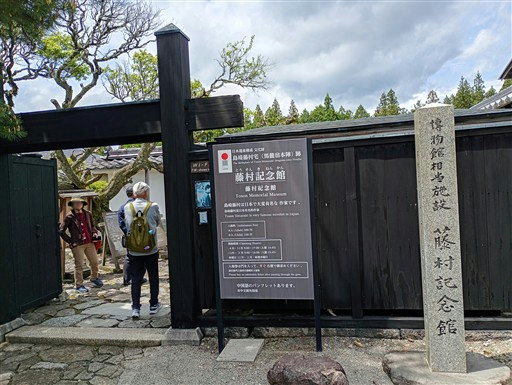
木曽の五木。ヒノキ、サワラ、アスナロ、コウヤマキ、ネズコ。
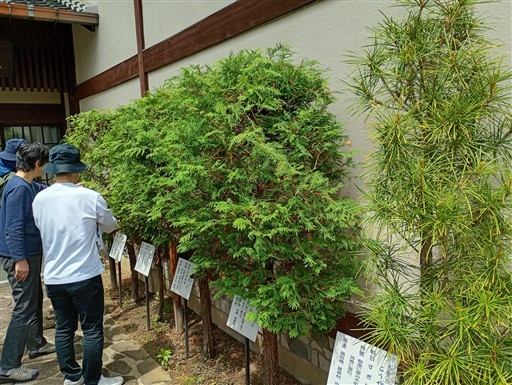
高札場。
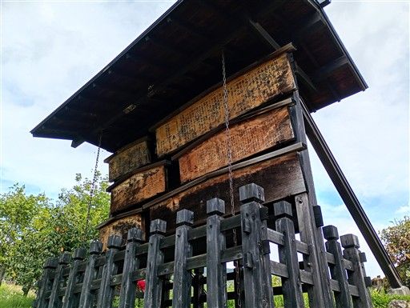
展望台に到着。
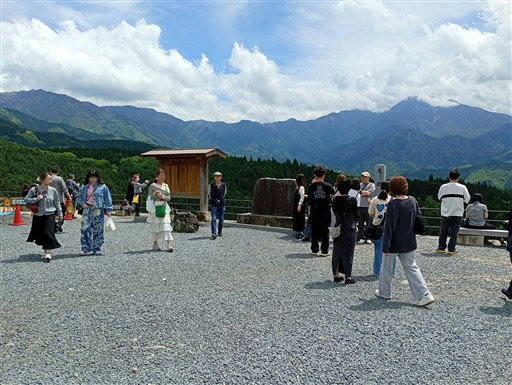
馬籠宿を見下ろす。もう少しきれいに全体を見下ろせればよいのだが。
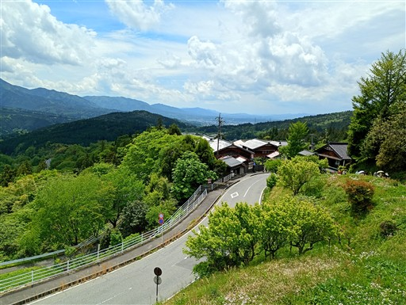
広がる展望。正面の山は恵那山。やはりこの山は他を圧倒して存在感がある。
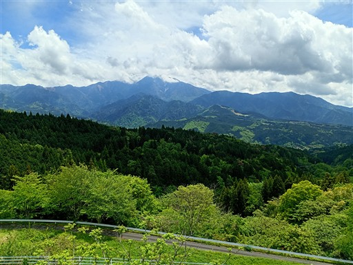
復路で和菓子屋に立ち寄り、お土産を購入。
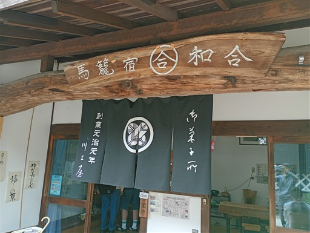
馬籠宿の観光を終えたら柿其渓谷に向かう。
途中、妻籠宿に立ち寄り、パン屋で明日のパンを購入。
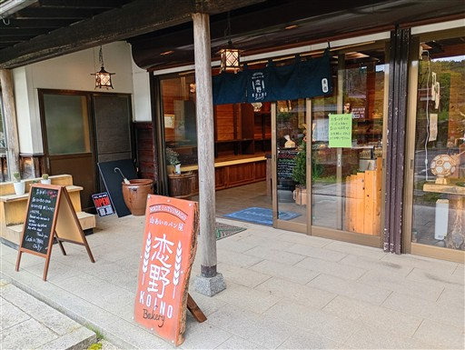
柿其渓谷駐車場に到着。
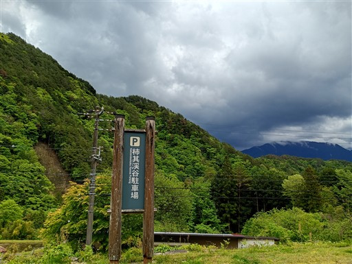
立派な石碑がある。
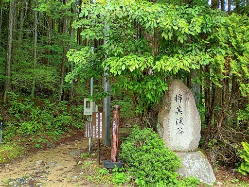
道路が水浸し。スニーカーだとちょっときつい。
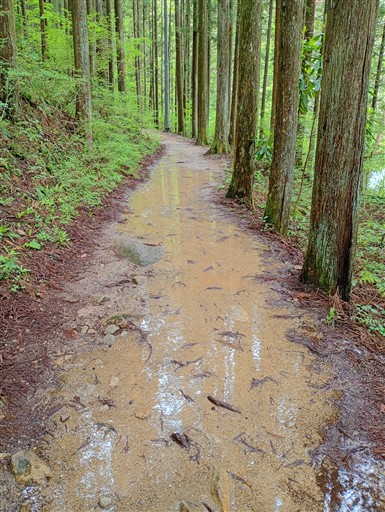
立派な吊り橋を渡る。
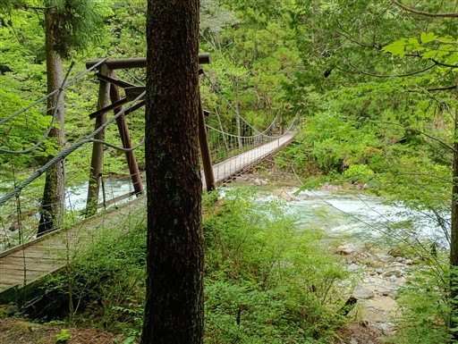
川沿いの遊歩道。かなり川に近い場所に道があり、良い景色が見られる。
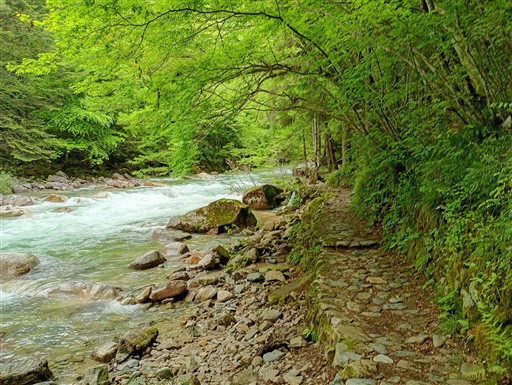
水量はいつもより多めだろう。少し濁っている。
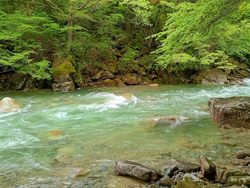
深い谷の中を歩く。こんな場所にも歩きやすい遊歩道が続いているのはありがたい。
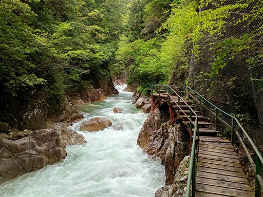
牛ヶ滝が見えてきた。落差18mの立派な滝だ。
すぐ下に観瀑台が見える。
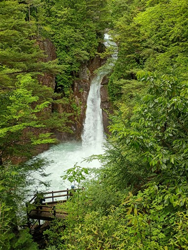
観瀑台に移動。ここもかなりの水量。
観光パンフレットの写真とはだいぶ違う。
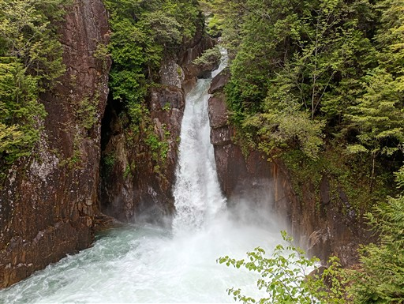
さらに進んで恋路峠を目指す。
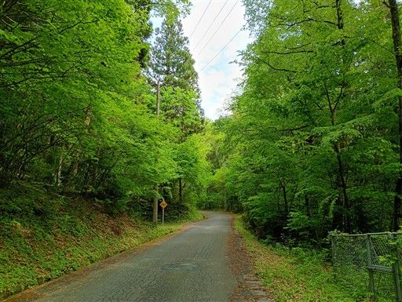
恋路峠に到着。こんな名前の峠あるかな？と思って調べてみたら
「小路峠が訛ったもの」らしい。後世に観光のために付けられたのかな？
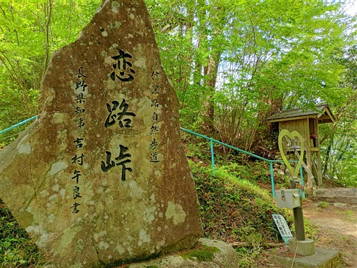
展望台があるが、広がる展望はちょっと寂しい。
視界が狭く、大したものも見えない。雲が無ければ中央アルプスが見えるようだ。
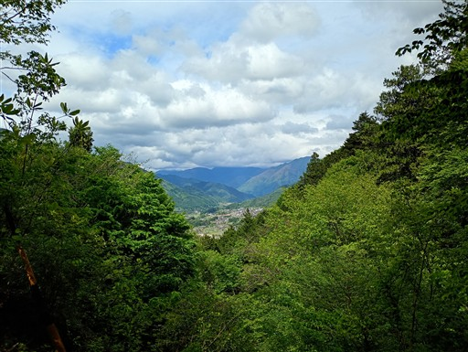
観光を終えたらスマイル付知店で買い物をしてキャンプ場に戻る。
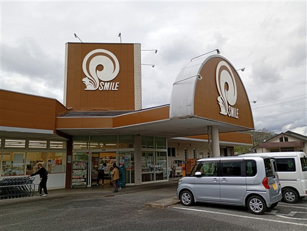